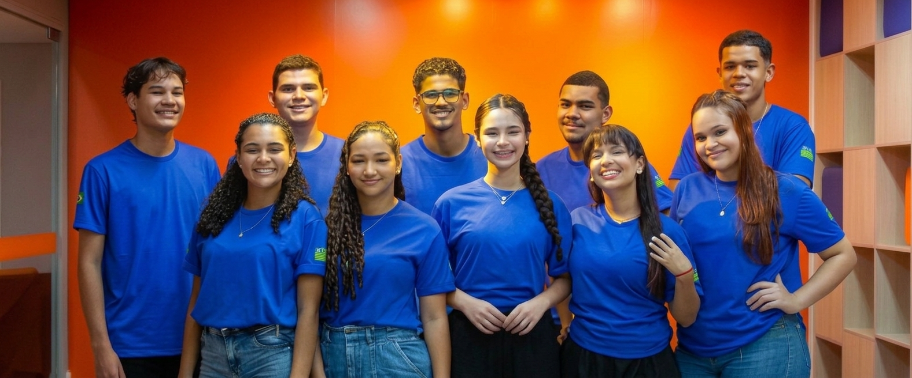

Conecta Jovem
Conectando jovens a oportunidades que transformam vidas
O Conecta Jovem reúne informações sobre primeiro emprego, programas Jovem Aprendiz, cursos gratuitos e projetos sociais.
Seu futuro começa com uma oportunidade!
Oportunidades para você!
Primeiro Emprego
Vagas destinadas a jovens que estão buscando a primeira experiência profissional, com apoio e aprendizado dentro da empresa.
Jovem Aprendiz
Programa que combina trabalho e estudo, permitindo que o jovem aprenda uma profissão enquanto recebe salário e benefícios.
Cursos Profissionalizantes
Cursos gratuitos e profissionalizantes para desenvolver habilidades práticas, como informática, atendimento ao cliente e empreendedorismo.
Lista de oportunidades disponíveis
- Vagas de primeiro emprego
- Programa Jovem Aprendiz
- Cursos gratuitos de informática
- Oficinas de empreendedorismo
- Capacitação profissional
Como começar a procurar uma oportunidade?
- Identificar sua área de interesse
- Procurar oportunidades disponíveis
- Preparar seu currículo
- Realizar sua inscrição
- Acompanhar o processo seletivo

Dicas para conquistar seu primeiro emprego!
1. Como elaborar um currículo
Mantenha seu currículo simples, com seus dados, objetivos, escolaridade e cursos. Mesmo sem experiência, mostre sua vontade de aprender.
2. Como se comportar em uma entrevista
Seja educado, olhe nos olhos, fale com clareza e mostre interesse pela vaga. Chegue preparado para falar sobre você.
3. A importância da pontualidade
Chegar no horário mostra responsabilidade e respeito. Saia de casa com antecedência para não se atrasar no dia da entrevista ou do trabalho.